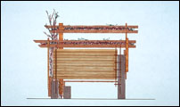

|
 |
Sukkot Project
August 28 - October 24, 1999
Judaica Gallery
This project explores the meaning of the Jewish holiday of Sukkot, a festival of thanksgiving celebrated since ancient times for seven days in the autumn. Sukkot is the name given to the temporary huts people dwelt in during the harvest. Today, it is also a holiday of "tzedakah," meaning charity and justice for the homeless.
The Sukkot Project was organized and sponsored by The Minneapolis Institute of Arts and Rimon: The Jewish Metropolitan Council on Arts and Culture.